CEIS requires all data entry to be completed prior to forms
production.
For instance, you will not be able to produce a Certificate of
Divorce until the appropriate divorce details are entered in CEIS; a
Warrant cannot be produced until results are recorded properly against
the person to be arrested.
Producing Forms
All forms produced must be entered in CEIS to complete the electronic
record of the file. The Document tab includes a summary of all
forms that have been produced on the file along with all documents and
orders.
If the form is available in CEIS, it must be produced from CEIS
rather than another application.
If the forms within CEIS are unavailable for any reason (such as the
form is not included, or CEIS application is down) then registry staff
can use the Intranet PDF forms. If a document is produced using another
application, the document must be updated in CEIS to reflect the
accurate history of documents.
Adobe Forms that are produced in CEIS
Level
Class
Name
Code
P
Small Claims
Notice of Settlement Conference
NSC
P
Small Claims
Warrant of Arrest
WOA
P
Family
Notice of Family Management
Conference
NFMC
P
Family
Notice of Family Settlement
Conference
NFSC
P
Family/Small Claims
Order
ORD
P
Family
Order Terminating Protection Order
OTP
P
Family
Order without Notice
ORNA
P
Family
Consent Order
COR
P
Family
Order for Imprisonment
OI
P
Family
Summons
SUM
P
Family
Warrant of Committal
WOC
P
Family
Release from Custody
RC
P
Family
Warrant for Arrest
WFA
Warrant for Arrest After Subpoena
WAP
P
Family
Protection/Restraining Order
POR
P
Family
Recognizance- BCFMA
RECO
P
Family
Restraining Order – FMER
RESO
P
Family
Notice of Restraining/Protection
Order
NRP
S
Family Law Proceeding
Certificate of Divorce
COD
S
Probate
Grant of Administration
GOM
S
Probate
Grant of Probate
GRP
How to Produce Adobe Forms
in CEIS
This example is a Notice of Settlement Conference for Small
Claims, all steps to produce any form is similar process.
STEP 1: Check the file to ensure a the file is ready
to be set, review the correct manual, if
needed.
Select the document by typing in NSC code or finding the
description (2)
Date Filed/Granted will auto fill to today’s date, this can be
changed (3)
Est Days/hours/mins if known you may enter these details
(4)
Click save to populate other tabs (5)
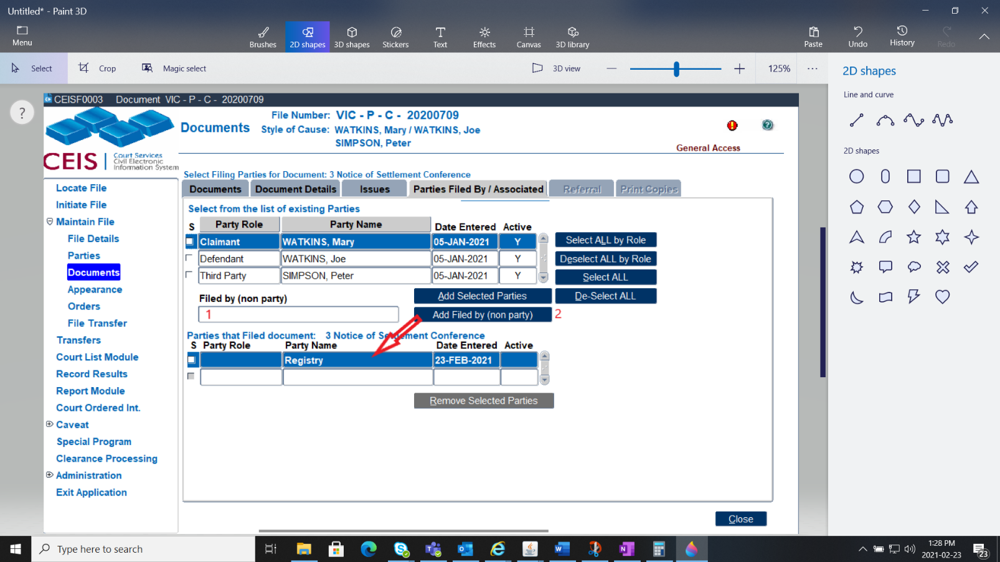
Enter Registry in the Filed By (non Party) (1)
Click on the Add Filed By (non Party) button (2)
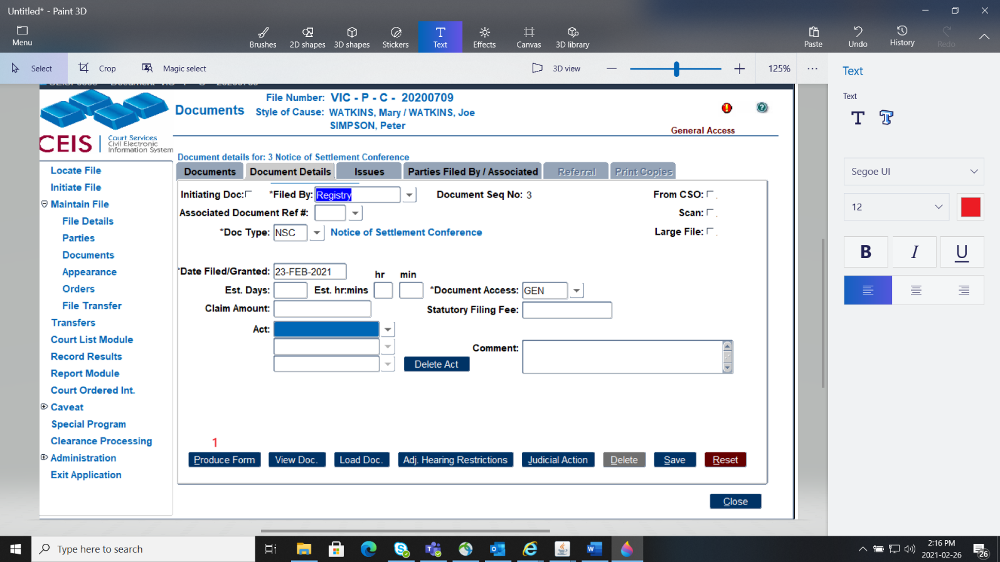
Click back to the Document Details tab
Click the Produce Button (1)
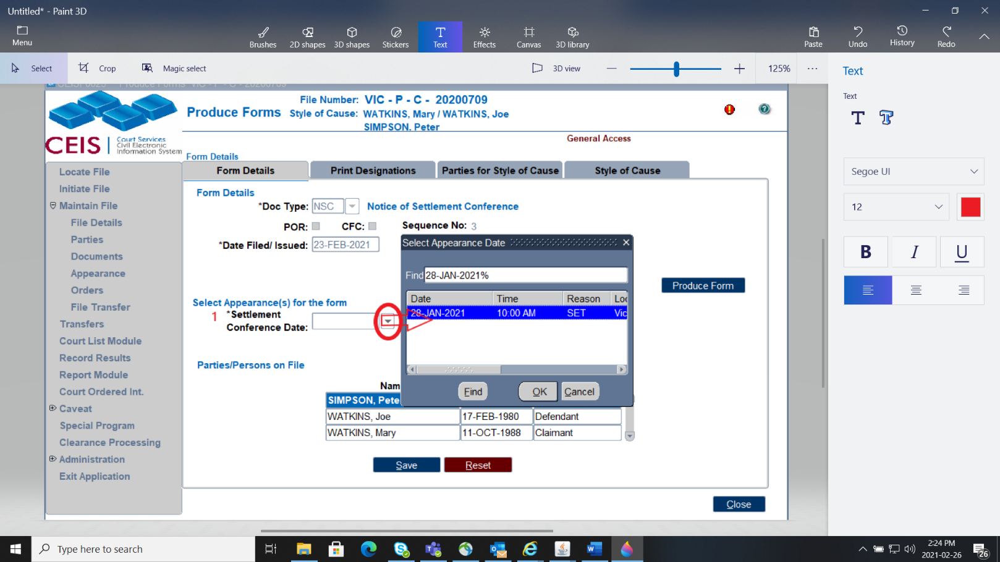
NOTE – If you do not need to look at any of the other tabs
you can Produce the Form from here
There are 4 tabs in this area.
To select who should be notified of this hearing, click on the
Print Designations Tab
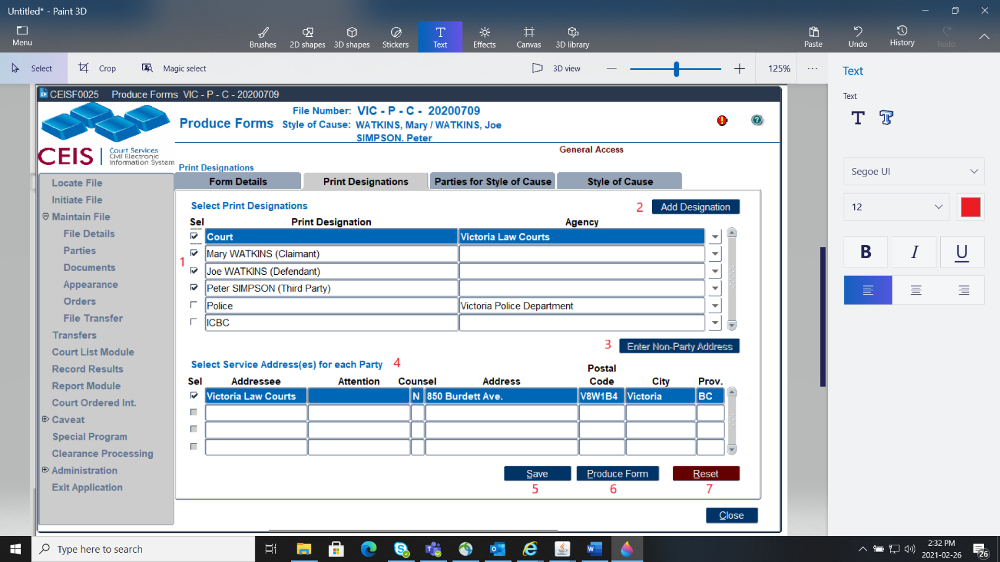
Untick the parties that will not or should not be receiving the
Notice (1)
To add a non party; click on Add Designation and fill out their
details (2)
To enter that non party; click on the Enter Non-Party Address
button (3)
Placing the blue line on the party, will show the party’s address
in the bottom field. If they have multiple addresses you and select
which on you would like the address to be. (4)
When you have finished your update, click Save. (5)
From this screen you have the option to Produce your document
(6)
If you need to reset the screen you can click Reset (7)
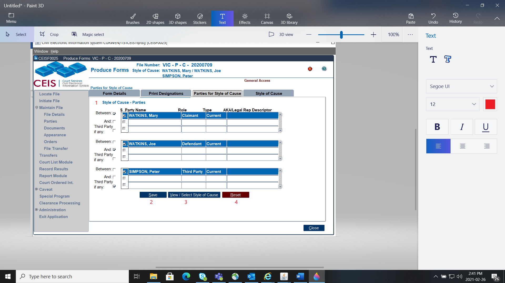
This Parties for Style of Cause Screen shows you all the parties
and their designations. If a party has multiple designations or you wish
to remove someone from the Style of Cause you can modify it here.
(1)
Once you are satisfied with your update, click save (2)
To view your style of cause, click the View/Select Style of Cause
(3)
If you need to reset what you clicked, click Reset (4)
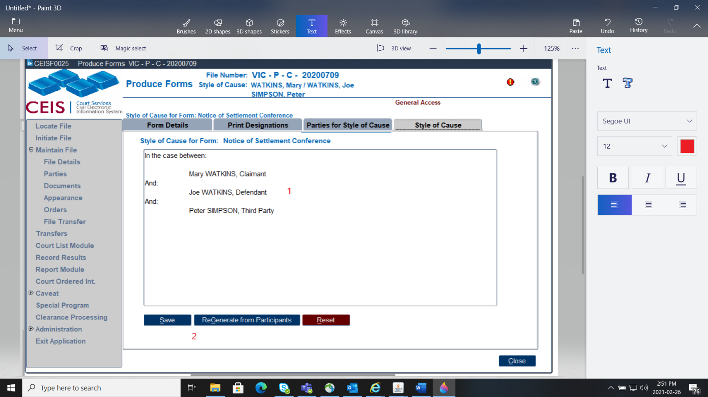
In this box, you can manually type if you need to add or change
the style of cause. (1)
If the Style of Cause it not showing properly, click ReGenerate
from Participants to update, then click Save (2)
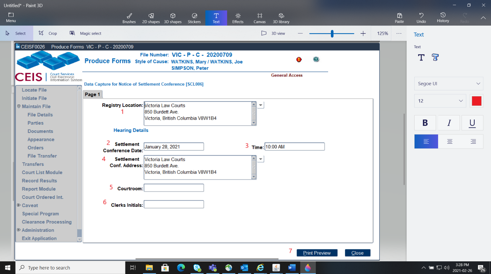
STEP 4: Producing
the Document
Registry Location is the location producing the document.
(1)
“Settlement Conference Date” is the appearance date selected
(2)
Time is the scheduled appearance time (3)
“Settlement Conference Address” is the location in which the
appearance will take place (4)
The Courtroom will need manual entry (5)
The Clerks Initials will need manual entry (6)
Next step is to Print Preview (7)
Ensure you review your document before saving and printing, if
there is an error and you have saved and printed the form, you will
require CEIS Support to
remove the document.
When you are satisfied, you can electronically sign the form
using your IKEY and click Save form at the top of the
page.
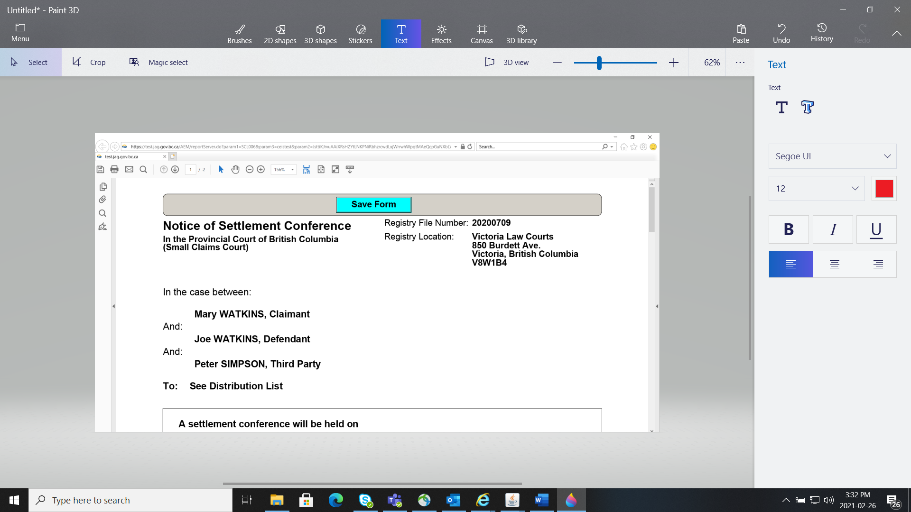
How to Scan Documents
Highlight the blue line on the document or order you wish to scan and
use either the Documents tab or the Orders tab to scan.
STEP 1: Turn the scanner on. Ensure that the blue
line is highlighting the document or order that you wish to scan to and
the document or order has been placed into the document feeder of the
scanner.
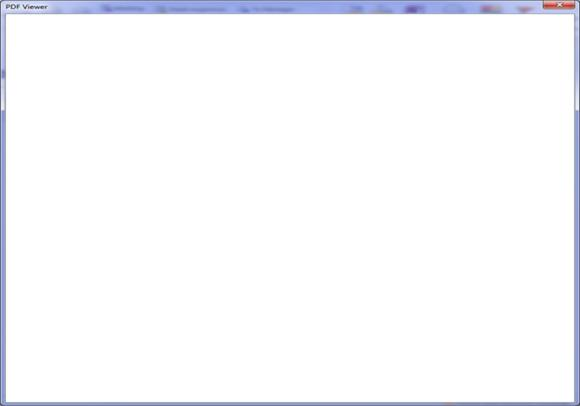
STEP 2: Click
the Scan document button and a blank pdf viewer will
appear on the screen and the scanner will commence scanning the
document.
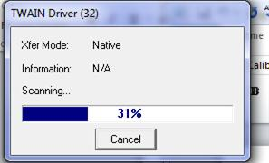
You may also see the following
box appear to advise how much of the scanning job has been
completed.
STEP 3: Once the scanning has completed, the
document will appear in the pdf viewer. To save the image, you click
the “X” in the upper right hand corner to close and save the image
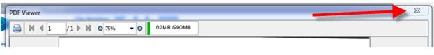
A message will appear asking you if you want to save the document and
you would select YES to save the document or NO to cancel.
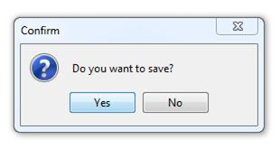
How to Upload Documents
Here are the steps to Upload documents.
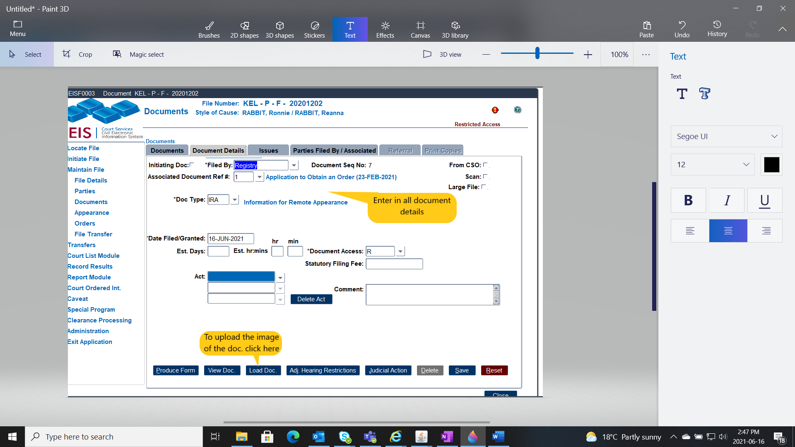
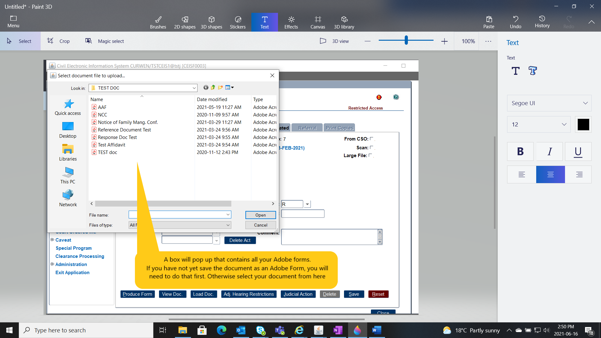
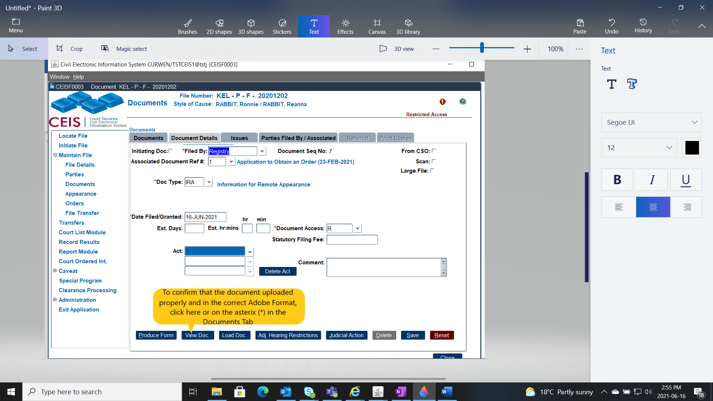
How to Email Documents
We have some exciting news! Effective May 17, 2021
ALLProvincial Family and Effective
August 16, 2021 ALL Small Claims Files will have the
ability to email ANYdocument to the
parties on file (if they have an email address on file)
New Email Documents button added to Documents
module.
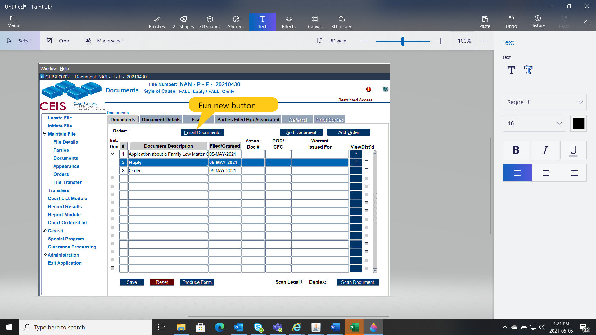
What are the Rules of this fun new button..
File must be a Provincial Family/Small Claims File
At least one party must have an email address
Click to highlight row of document to send by email (blue
line)
Document must have an image
Press to access new Distribute Documents by Email screen
Hotkey for quick navigation: Alt+E
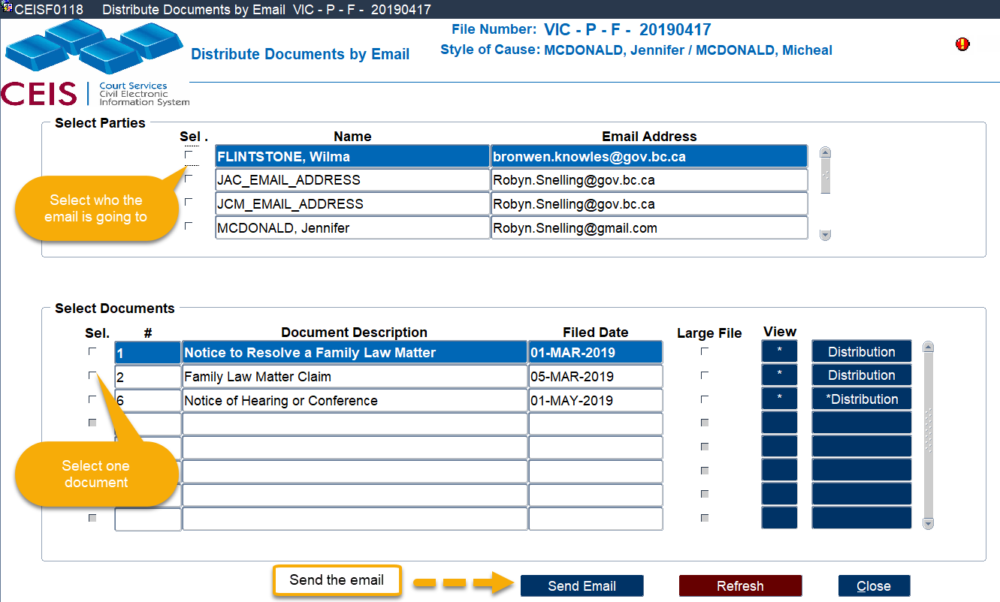
New Distribute Documents by Email screen has been
added. This is where the magic happens! Select your document and your
party, JCM or JAC and email away.
STEPS:
Select 1 or more recipients (Party/JCM/JAC)
Select 1 document. To view the document prior to emailing, click
the * button
Click Send Email.
NOTE - You can only email 1 document per email. If there are multiple
documents to send to a party/JCM/JAC then you will need to email 1 at a
time.
You can select multiple parties to email the document to and CEIS
will email them all individually.
To send a 2nd document:
STEPS:
Unselect the initial document selected by clicking the active
checkmark
Select the 2nd document to send by clicking the Sel.
check box
Click Send Email button
Large File – indicates an image is very large and
may take some time to display if a CEIS user wishes to preview
it.
Click Distribution if you need to view the details
of where the email was sent. An asterisk on the Distribution button
indicates there are details to view. The Document Deliveries by Email
pop up will appear when the Distribution button is clicked.
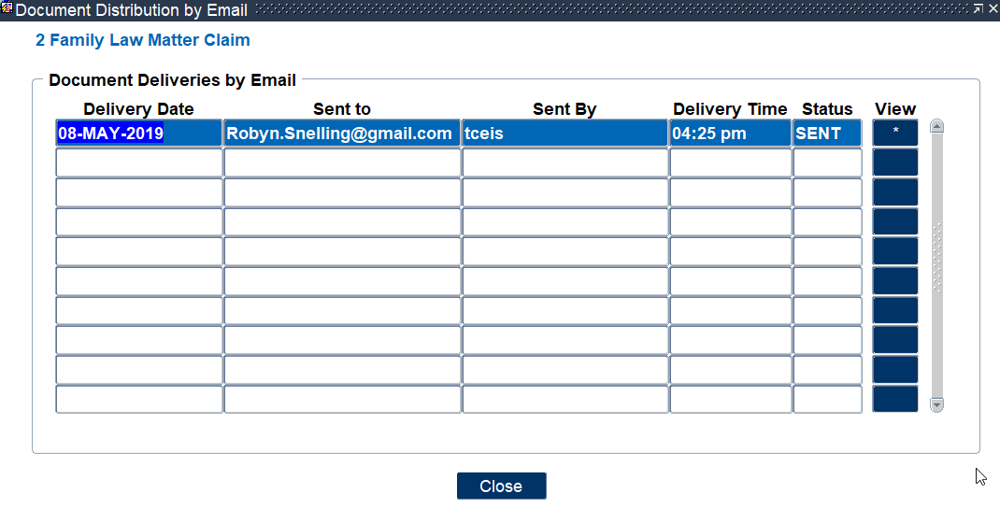
Date: Date email was sent
Sent to: Email address of the recipient
Sent by: CEIS user ID of sender
Delivery time: Time the email was sent
Status: Sent – Email sent
Click the Close button to leave this screen and return to the
Documents module.
Sample Email to Parties
(sample taken from outlook, other email programs will vary in display
format but content remains the same.)